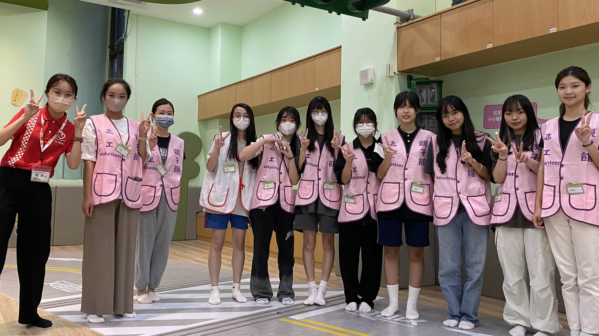

經驗

這是一個要帶小孩闖關的志工活動，一開始參加時，我擔心和小朋友相處會很麻煩，
但實際參與後，我發現他們的天真和純真的笑容讓人輕鬆又開心。
活動中，我負責跳格子和走獨木橋的挑戰。有些孩子自信滿滿地完成任務，
也有孩子需要媽媽陪伴才敢嘗試，但無論過程如何， 他們都很勇敢，
即使跌倒了也會爬起來繼續挑戰，這份堅持讓我非常佩服。
這次活動不僅教會我如何用耐心和鼓勵與孩子互動，也讓我感受到陪伴的力量。
未來有機會，我一定還會參加這類志工服務，因為這不僅帶給孩子快樂，也讓我在過程中成長許多。

暑假時參加了一場在台北世貿中心舉辦的比賽。雖然只是遊戲比賽， 但過程中我認識了新的隊友，
與隊友一起練習、磨合團隊默契。 練習時我們也曾有過爭執，但我耐心仔細地傾聽每位隊友的想法，
協助大家保持良好溝通與協作。最終，我們幸運地拿下了第3名的好成績。